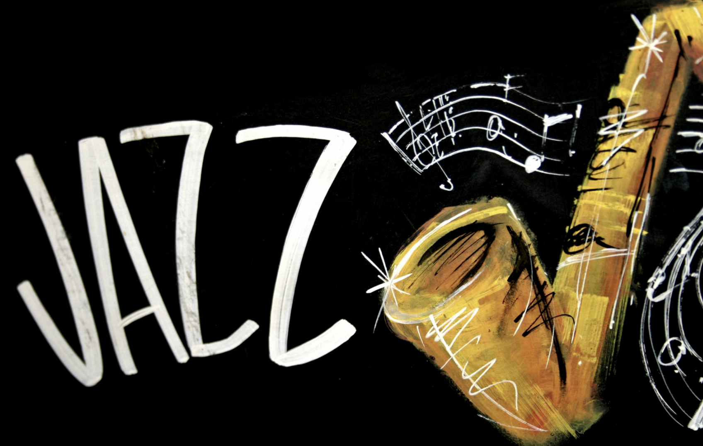

Джаз (англ. jazz) — вид музичного мистецтва, що виник на межі XIX—XX століття в США серед пригнобленого, безправного негритянського населення, серед нащадків чорних рабів, насильно вивезених зі своєї батьківщини та отримав згодом певне поширення.
Характерними рисами музичної мови джазу спочатку стали імпровізація, поліритмія, заснована на синкопованих ритмах, і унікальний комплекс прийомів виконання ритмічної фактури — свінг.
Як і реггі з репом традиційно вважається «музикою чорних».
Представники